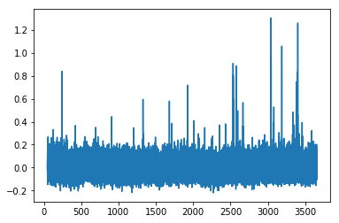

NWB Workshops and Hackathons
Back to Projects List

Change is the only constant
Key Investigators
- @neuromusic Justin Kiggins, Allen Institute for Brain Science
- @matchings Marina Garrett, Allen Institute for Brain Science
Project Description
Extensions & tutorials for storing operant conditioning data with calcium imaging. This project will use data generated for the Allen Institute’s Brain Observatory: Visual Behavior as the primary use case to develop NWB files for behavior training stages and Optical Physiology sessions:
Objectives
- NWB files for each stage of behavior training for Brain Observatory: Visual Behavior
- NWB files for one Change Detection + Optical Physiology session
Approach and Plan
Change Detection Datastream
- Extensions for Operant Conditioning data
- If not sufficiently supported by (1), extensions for the Change Detection task
- Develop extensions or existing objects to store the following: Visual Stimulus (images and full field gratings), Lick Events, Water Events, Running Speed (and raw Encoder data)
Optical Physiology Datastream
- Store Optical Physiology data
Progress and Next Steps
Progress
- Saved optical physiology data to NWB file
- Saved record of visual stimuli (images) to NWB file
- Read out calcium traces from NWB file
- Read out visual stimuli from NWB file
Next steps
- Define extension for Operant Conditioning Data
Illustrations